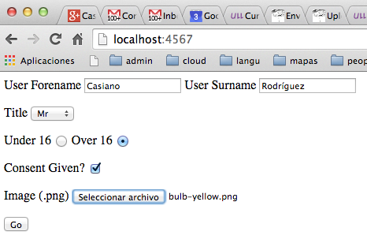
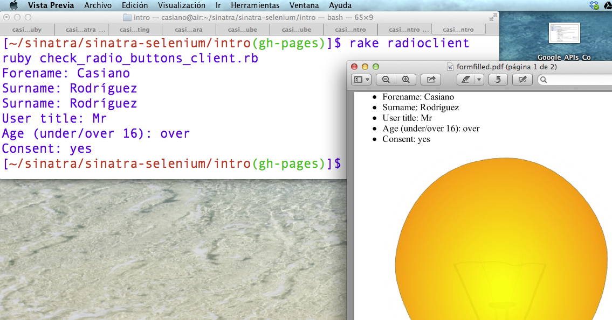

Siguiente: Buscadores/Finders, Ámbito/Scope y Coincidencias/Matches Subir: La API de Capybara Anterior: Clicks en Botones y Índice General Índice de Materias
Consideremos el siguiente fragmento de una vista HTML:
[~/sinatra/sinatra-selenium/intro(gh-pages)]$ sed -ne '/@@index/,/^$/p' check_form_server.rb
@@index
<form id="myform" method="post" action="/">
<label for "Forename">Forename</label>
<input type="text" name="Forename" value="" /><br/>
<label for "Surname">Surname</label>
<input type="text" name="Surname" value="" /><br/>
<input type="submit" value="Go" />
</form>
[~/sinatra/sinatra-selenium/intro(gh-pages)]$ cat check_form_client.rb
require 'capybara'
require 'capybara/poltergeist'
Capybara.default_driver = :poltergeist
session = Capybara::Session.new(:poltergeist)
session.visit "http://localhost:4567"
session.instance_eval do
fill_in 'Forename', :with => 'Casiano'
fill_in 'Surname', :with => 'Rodríguez'
click_on 'Go'
save_screenshot("formfilled.pdf")
f = find('#Forename') # f is a Capybara::Element object
puts "****\nForename = #{f.text}"
s = find('#Surname')
puts "****\nSurname = #{s.text}"
end
Cuando se ejecuta ruby check_form_client.rb
produce esta salida:
[~/sinatra/sinatra-selenium/intro(gh-pages)]$ rake formclient ruby check_form_client.rb **** Forename = Casiano **** Surname = Rodríguez
Además, la llamada a save_screenshot nos ha guardado un pdf
con un screenshot de la página:
[~/sinatra/sinatra-selenium/intro(gh-pages)]$ ls -ltr | tail -1 -rw-r--r-- 1 casiano staff 13625 1 dic 13:35 formfilled.pdf [~/sinatra/sinatra-selenium/intro(gh-pages)]$ open formfilled.pdfVéase el código del servidor sinatra en crguezl/selenium-examples/blob/gh-pages/check_form_server.rb
Para localizar campos que aceptan input,
Capybara utilizará:
id attribute of the input element
name attribute of the input element
label element
La API para manipular checkboxes y radio buttons es similar a la de los text inputs.
La siguiente vista contiene algunas checkboxes y radio buttons:
[~/sinatra/sinatra-selenium/intro(gh-pages)]$ sed -ne '/@@index/,/^$/p' check_radio_buttons_server.rb
@@index
<form id="myform" method="post" action="/" enctype="multipart/form-data">
<label for="name1">User Forename</label>
<input id="name1" type="text" name="Forename" value="" />
<label for="name2">User Surname</label>
<input id="name2" type="text" name="Surname" value="" />
<p>
<label for="title">Title</label>
<select name="user_title" id="title">
<option>Mrs</option>
<option>Mr</option>
<option>Miss</option>
</select>
</p>
<p>
<label for="under_16">Under 16</label>
<input type="radio" name="age" value="under"
id="under_16" >
<label for="over_16">Over 16</label>
<input type="radio" name="age" value="over"
id="over_16">
</p>
<p>
<label for="consent">Consent Given?</label>
<input type="checkbox" value="yes" name="consent_checkbox"
id="consent"/>
</p>
<p>
<label for="form_image">Image (.png)</label>
<input type="file" name="image" id="form_image"/>
</p>
<input type="submit" value="Go" />
</form>
Esta es la forma en la que se ve:

Este es el código para manipular el formulario con menus, radio buttons y checkboxes:
[~/sinatra/sinatra-selenium/intro(gh-pages)]$ cat check_radio_buttons_client.rb
require 'capybara'
require 'capybara/poltergeist'
Capybara.default_driver = :poltergeist
session = Capybara::Session.new(:poltergeist)
session.instance_eval do
visit "http://localhost:4567"
fill_in 'Forename', :with => 'Casiano'
fill_in 'Surname', :with => 'Rodríguez'
select 'Mr', :from => 'title' # id
choose "Over 16" # text
check "consent" # id
attach_file "form_image", "./bulb.png"
click_on 'Go'
# Save a screenshot of the page and open it for inspection.
save_and_open_screenshot("./formfilled.pdf")
f = find('#Forename') # f is a Capybara::Element object
puts "#{f.text}"
s = find('#Surname')
puts "#{s.text}"
puts "#{s.text}"
puts "#{find('#title').text}"
puts "#{find('#age').text}"
puts "#{find('#consent').text}"
end
La llamada save_and_open_screenshot("./formfilled.pdf")
guarda un screenshot de la página y abre el fichero .pdf:

<select>
<select name="user_title" id="title">
<option>Mrs</option>
<option>Mr</option>
<option>Miss</option>
</select>
usamos el método select
select 'Mr', :from => 'title' # idSi
:from esta presente, select encuentra la caja
y la selecciona. En otro caso encuentra una opción y la selecciona.
Si el select es múltiple18.4,
se le puede llamar varias veces para que seleccione mas de una opción.
Como ocurren con los elementos input
Capybara mira en las labels y en los atributos id y name.
El valor a seleccionar (Mr)
debe ser uno de los textos en la lista de hijos option:
<option>Mrs</option> <option>Mr</option> <option>Miss</option>
Capybara dispone asimismo de un
método unselect que limpia la selección.
<label for="under_16">Under 16</label>
<input type="radio" name="age" value="under"
id="under_16" >
<label for="over_16">Over 16</label>
<input type="radio" name="age" value="over"
id="over_16">
usamos choose
choose "Over 16" # textLa sintáxis es:
#choose(locator, options = {}) ⇒ Object
encuentra el radio button y lo marca. locator puede ser
name, id o el texto de la label.
Este es su código:
# File 'lib/capybara/node/actions.rb', line 68
def choose(locator, options={})
find(:radio_button, locator, options).set(true)
end
Para seleccionar la checkbox
<label for="consent">Consent Given?</label>
<input type="checkbox" value="yes" name="consent_checkbox"
id="consent"/>
usamos check:
check "consent" # idThe check box can be found via name, id or label text.
Exite un método inverso uncheck:
uncheck(locator, options = {})
Find a check box and mark uncheck it.
# File 'lib/capybara/node/actions.rb', line 94
def uncheck(locator, options={})
find(:checkbox, locator, options).set(false)
end
Para cargar un fichero
<p>
<label for="form_image">Image (.png)</label>
<input type="file" name="image" id="form_image"/>
</p>
que es procesado en el servidor por esta ruta:
[~/sinatra/sinatra-selenium/intro(gh-pages)]$ sed -ne '/^post/,/^$/p' check_radio_buttons_server.rb
post '/' do
pp params
File.open("public/image.png", "w") do |f|
f.write(params['image'][:tempfile].read) if f.size < (1 << 16)
end
erb :result, :locals => { :params => params }
end
La vista result muestra los resultados:
@@result
<ul>
<li id="Forename"> Forename: <%= params[:Forename]%> </li>
<li id="Surname"> Surname: <%= params[:Surname] %> </li>
<li id="title"> User title: <%= params[:user_title] %> </li>
<li id="age"> Age (under/over 16): <%= params[:age] %> </li>
<li id="consent"> Consent: <%= params[:consent_checkbox] %> </li>
<li id="image"><img src="/image.png" /></li>
</ul>
<a href="/">Go back</a>
Recuerde que debe establecer el enctype
en el elemento form a multipart/form-data,
sino obtendríamos el nombre del fichero
en vez del objeto:
[~/sinatra/sinatra-selenium/intro(gh-pages)]$ grep '<form' check_radio_buttons_server.rb <form id="myform" method="post" action="/" enctype="multipart/form-data">Para subir el fichero en capybara usamos
attach_file:
attach_file "form_image", "./bulb.png"The file field can be found via its name, id or label text.
# File 'lib/capybara/node/actions.rb'
def attach_file(locator, path, options={})
Array(path).each do |p|
raise Capybara::FileNotFound,
"cannot attach file, #{p} does not exist" unless
File.exist?(p.to_s)
end
find(:file_field, locator, options).set(path)
end